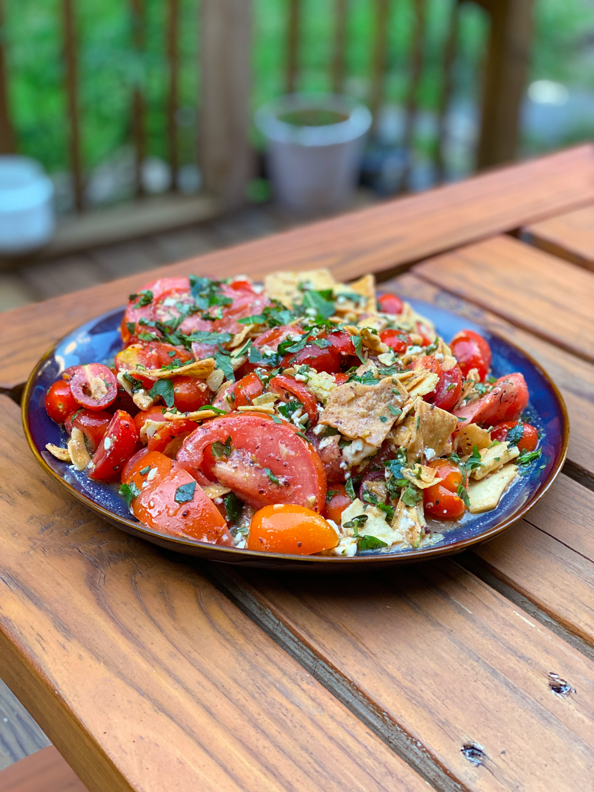

Tomato Salad With Herbs and Pita Chips

Dressed in a vinaigrette with chips to bring some salty crunch, this is the perfect recipe to show off those fresh, summer farmer’s market tomatoes!
Heirloom Tomato and Pita Chip Salad
Heirloom Tomato and Pita Chip Salad
Yield:
Serves 4-6
Active Time:
30 minutes
Total Time:
30 minutes
Ingredients:
- 3 medium heirloom tomatoes
- 1 cup mixed cherry tomatoes
- 2 tsp kosher salt, divided
- 1 lemon
- 2 garlic cloves
- 6 Tbsp olive oil (¼ cup + 2 Tbsp)
- ½ Tbsp cumin
- ½ Tbsp dried thyme
- ½ Tbsp coriander
- 2 large handfuls of pita chips
- 2 tsp honey
- 4 oz Greek feta, freshly crumbled (not pre-crumbled!)
- ½ cup fresh basil leaves, sliced into strips
- ½ cup mint leaves, sliced into strips
Recipe:
- Remove the core from the heirloom tomatoes and slice them into bite-sized wedges. Cut the cherry tomatoes in half. Transfer tomatoes to a bowl and season with a large pinch of salt, about 1 teaspoon. Stir to combine, being careful not to break up the tomatoes.
- Zest the lemon, then use the same zester to grate the garlic cloves (watch your fingers!).
- Warm olive oil in a small pan. Once hot, add the cumin, thyme, and coriander, stirring until fragrant, about 1 minute. Add garlic and turn off the heat. Add in lemon zest. This is now the best olive oil mixture in the world.
- Place pita chips in a heatproof bowl. Mix with 2 tablespoons of the flavored oil, being careful not to break the chips into crumbs.
- Add the juice of the lemon, honey, and remaining salt to the flavored oil. Whisk to emulsify.
- Add the oiled pita chips to the tomatoes. Gently mix in the feta, basil, and mint. Finally, dress with the lemon mixture.
- Enjoy one of the best salads your tongue can ever experience!